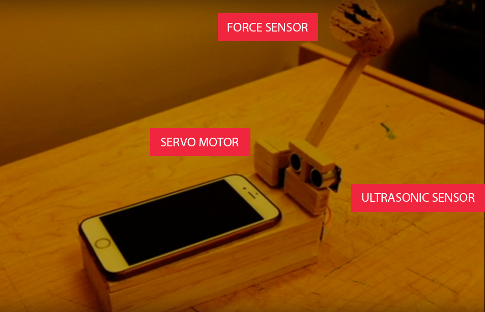
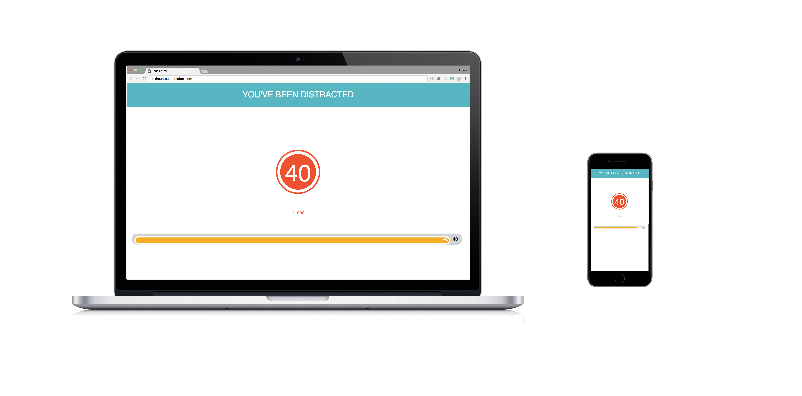

The Untouchable Box
"The Untouchable box warns the distraction and tracks the times of being interrupted
in order to reduce disturbance and redirect the focus back to work"
in order to reduce disturbance and redirect the focus back to work"

We all have the same experience. When we are doing our work, a message and a notification pop up on phone screen, we unconsciously grab the phone and look at it. And this act makes the cellphone be the first productivity killers. We may then put down the phone or we continue to use it browsing social media without realizing the there is only 1 hour left to finish the work.
With the help of The Untouchable Box, .you will be warned before you grab the phone to increase your awareness that you are being distracted. If you still grab your phone up, no worries, there is a surveillance function where you can track how many times you've been distracted.
Tool: Arduino Node.js p5.js

The untouchable box is intended for people who have self-awareness of being distracted, and gives a solution to help them focus back on their work